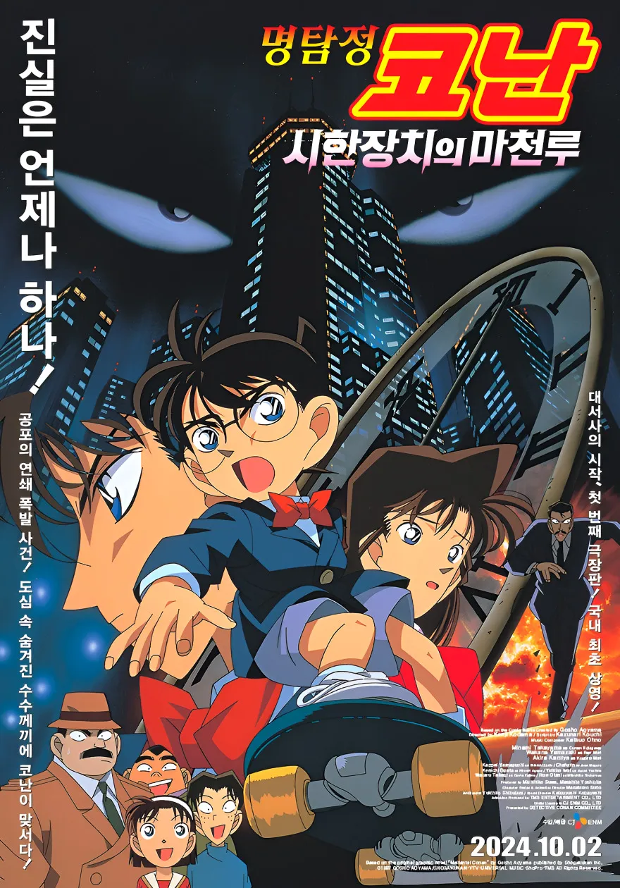

명탐정코난 : 시한장치의 마천루
방영 시기: 1997.4.19
국내 상영일:2024.10.2,2008.8.4
쿠로카와 가의 저택에서 쿠로카와 병원의 원장인 쿠로카와 다이조가 살해당한 사건을 조사하는 것으로 스토리가 시작,
5월 3일, 란이 신이치와의 데이트를 앞두고 스즈키 소노코를 만나기 위해 외출한 가운데, 아가사 박사의 집에 들른 코난은 어떻게 해야 할지 고민상담을 하다
뉴스를 통해 이틀 전 화약고에서 대량의 폭약이 도둑을 맞고 그 폭약으로 연쇠폭발사건이 발생 그 사건들을 해결해 간다는 이야기이다.
11억 엔의 일본 수입
명탐정 코난 극장판의 주요 서사인 액션과 추리의 조합을 처음으로 제시한 기념비적인 작품이다.
이러한 시도는 크게 호평을 받아, 26년 이상 지난 지금까지도 극장판 줄거리에 큰 영향을 주고 있으며 사실상 현재의 코난을 완성시킨 작품으로 여겨진다.
명탐정 코난 원작 팬들과, 안방 시청자, 그리고 끝내 극장 관람객들의 이목까지 사로잡았는데 이 모든 과정은 불과 3년 만에 이뤄진 초고속 성장이었다